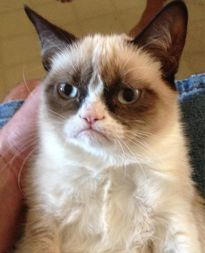

Good. Now uh, you might want to get back to whatever 'chu were doing before you showed up here, and try and keep this low profile, eh? I'd be a shame if this place started gettin' run over by a buncha' people.

Well, gee man, their ain't much else I can do. I've got this cat picture, but that's basically it. So, I uhh... I hope the rest of your day goes well then. Chau!
